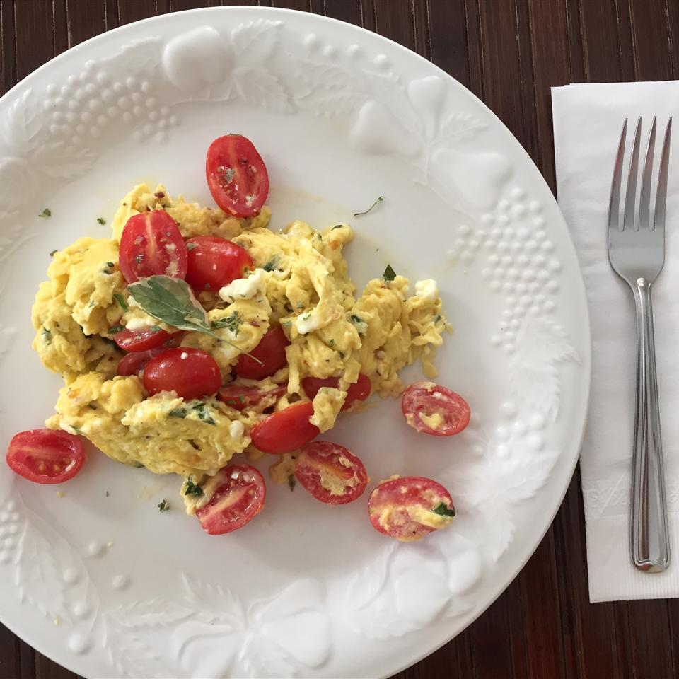

Scrambled Eggs

Description
This summer scramble is perfect! Adding juicy, sweet cherry tomatoes to a scramble tastes great.
Ingredients
- 3 large eggs
- 1 pinch red pepper flakes
- 9 cherry tomatoes, halved
- 2 tablespoons crumbled feta cheese
- 1 tablespoon very thinly sliced fresh basil leaves
- olive oil
- 1 pinch sea salt
Steps
- Beat eggs and red pepper flakes together in a bowl.
- Stir tomatoes, feta, and basil leaves into egg mixture.
- Heat olive oil in a nonstick skillet over high heat until oil starts to shimmer.
- Pour egg mixture into hot oil and cook, without stirring, for 5 seconds.
- Cook and stir egg mixture until eggs are scrambled and softly set, about 30 seconds.
- Transfer eggs to a plate and sprinkle with sea salt.